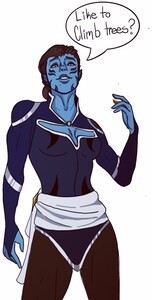
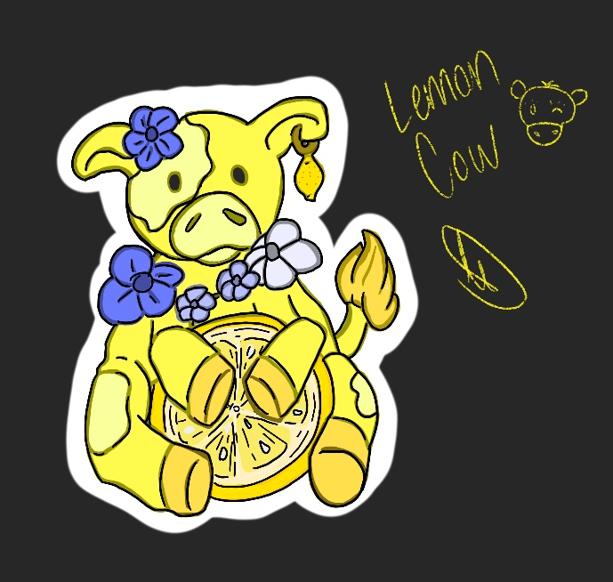
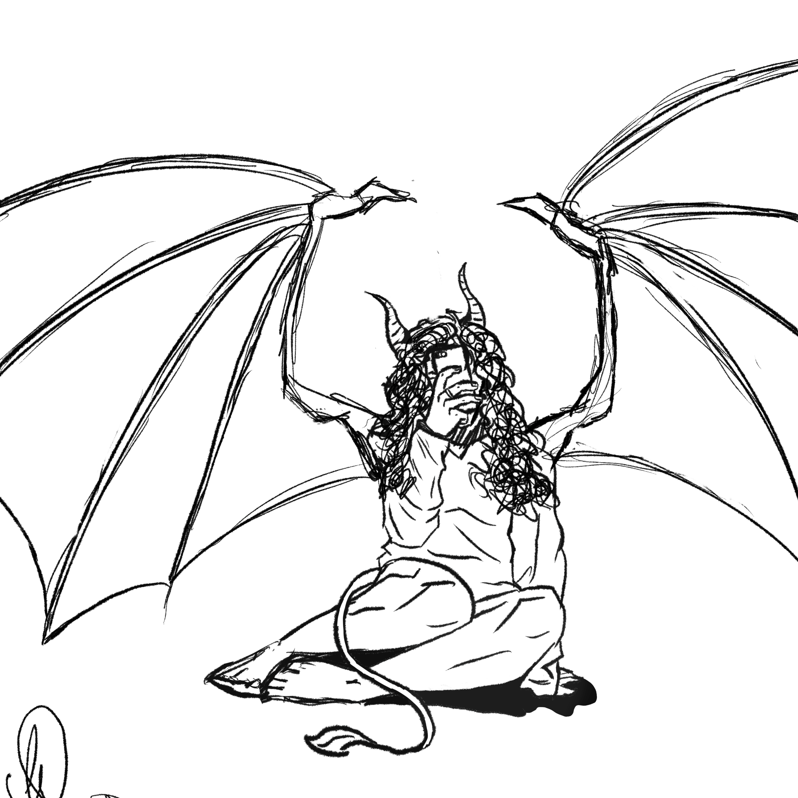
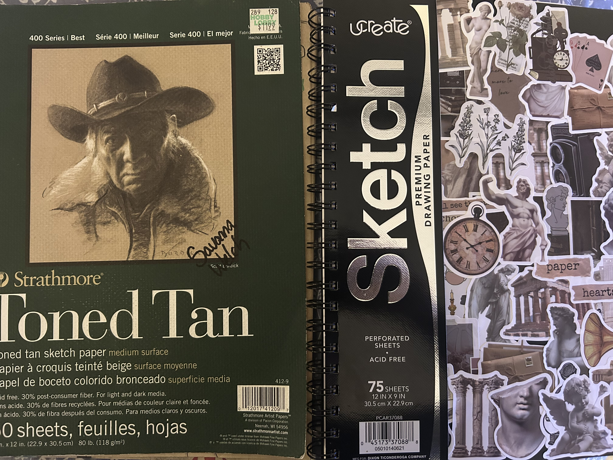
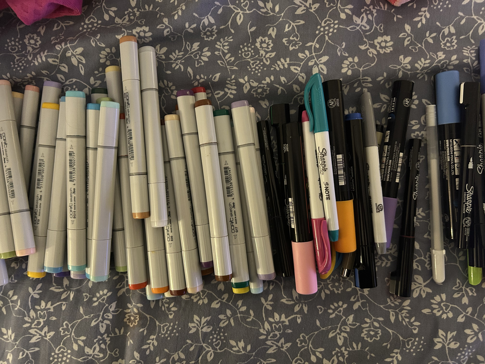
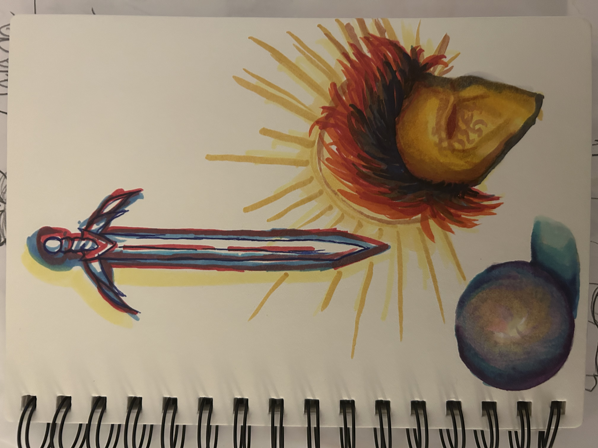
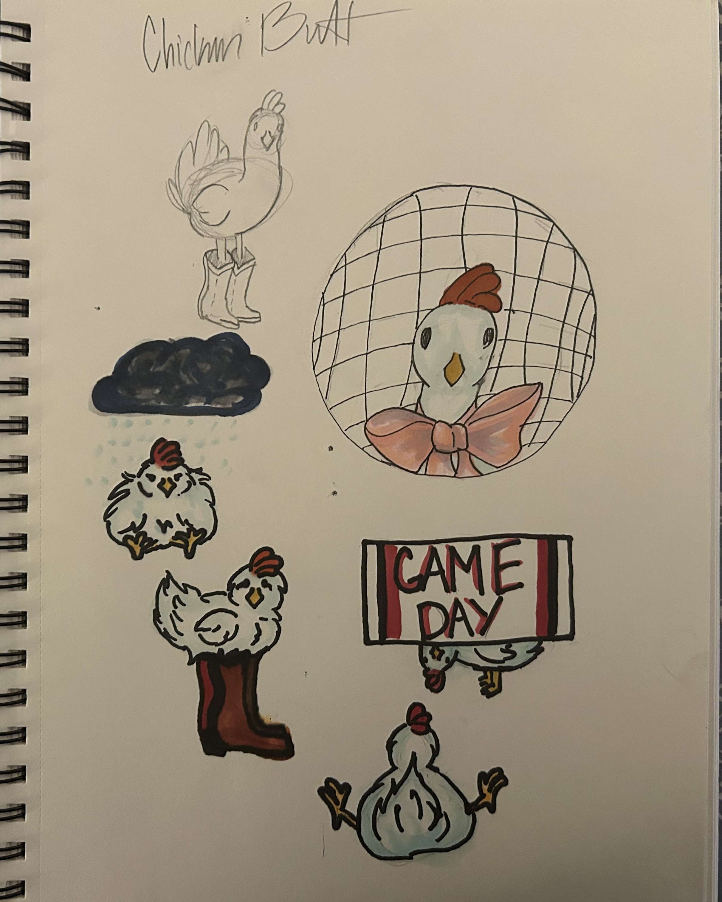
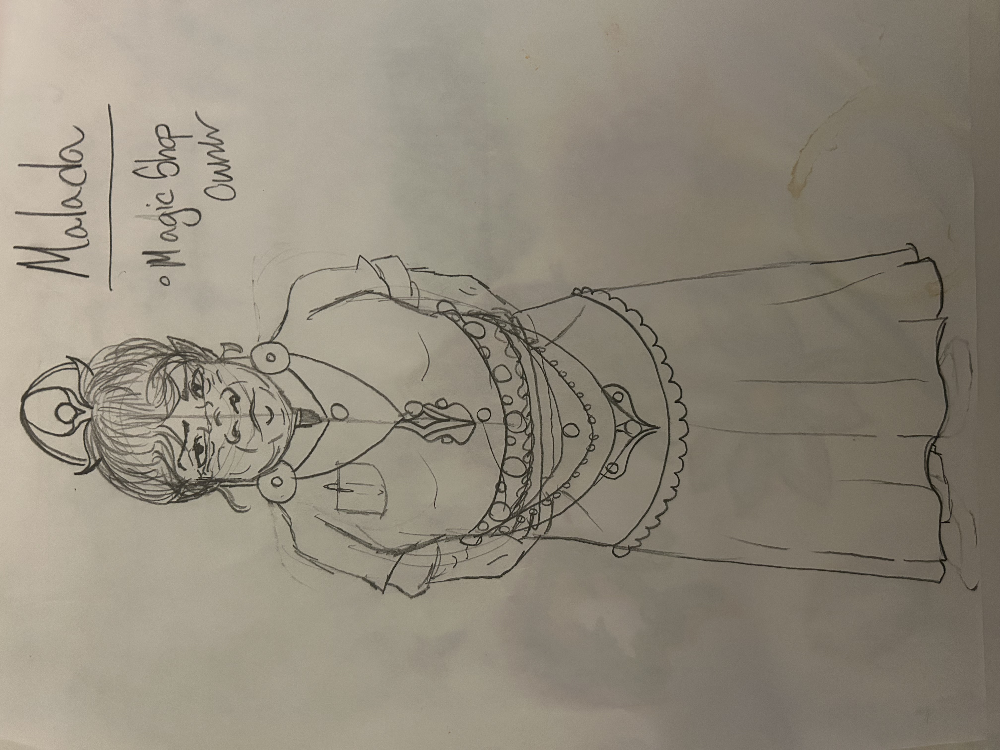

It’s no secret that I love drawing on my iPad—it’s where I first found my passion for selling my artwork. And I’ll be the first to admit that I am absolutely not a pro—not even close! But I once heard that the moment you sell your first piece of art, you can officially “consider yourself” an artist of sorts. So, since I became an “artist” the day I bought Procreate, I have a soft spot for this app. The first image is of my own D&D character, which I created when joining my friend’s campaign. I love drawing characters, so that one was more for me than anyone else. The second image is a sticker I made in high school—one that I actually sold a few of and was really proud of. This was also during the whole fruit craze of 2020... weird times, but hey, it put some cash in my wallet! And that last image? It was my very first drawing on Procreate. It started as a doodle-then-delete kind of thing, but I just couldn’t bring myself to erase it. In the end, it became more than just a random sketch—it marked the beginning of using my passion for something beyond just stress relief.


When it comes to creating, I love experimenting with different tools and materials to bring my ideas to life. Copic markers are one of my go-to supplies—they blend beautifully, allowing for smooth gradients and rich, layered colors that make my artwork pop. Whether I’m shading a character’s face or adding depth to a background, these markers give me the flexibility and control I need. On the other hand, when I want bold, vibrant details or a more graphic style, I reach for my Posca acrylic markers. Their opaque, quick-drying ink makes them perfect for crisp lines, highlights, and adding texture on all kinds of surfaces beyond just paper—like wood, canvas, or even glass. Of course, the type of paper I use depends entirely on the medium and the effect I’m going for. Thicker, smooth paper works best for Copics to prevent bleeding and allow for seamless blending, while textured or mixed-media paper is ideal for Posca markers since it can handle the layers of acrylic paint without warping. Some days, I prefer toned paper to experiment with highlights and shadows in a way that makes colors stand out even more. No matter what I’m working on, I love switching between different materials to see what works best—it keeps the creative process fresh and exciting!



When I sit down to draw, the first thing I decide is what kind of session it’s going to be—am I planning out a future idea, starting a brand-new project, or just doodling because my hands need something to do? It never has to be a serious or stressful process; in fact, I like to keep it as laid-back as possible. If I have a specific concept in mind, I’ll start by loosely sketching out the basics, getting a feel for the composition without worrying about perfection. But sometimes, I have no plan at all—I’ll just grab my sketchbook or iPad and start making random shapes or lines until something clicks. Those spontaneous moments often lead to my favorite ideas, especially when I let go of expectations and just have fun. Other times, I just need to unwind, so I’ll default to sketching whatever comes naturally—characters, random patterns, or even little creatures that don’t make any sense but make me laugh. There’s no right or wrong way to start; the important thing is that I’m creating, enjoying the process, and letting my creativity flow however it wants to. Whether it turns into a polished piece or just a messy page of doodles, every drawing session feels worth it in its own way.